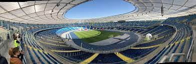
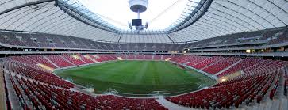

Przypomnijmy wybudowany w miejscu istniejącego boiska piłkarskiego kompleks lekkoatletyczny to pierwszy tego typu obiekt sportowy nie tylko na terenie gminy Bojanów, ale również w naszym regionie. Kompleks spełnia wszelkie wymagania stawiane przez Ministerialny Program Rozwoju Szkolnej Infrastruktury Sportowej. W skład obiektu wchodzą: bieżnia okrężna 4-torowej o dł. 400 m oraz bieżnia prosta 6-torowa o długości 130 m posiadająca nawierzchnię poliuretanową z natryskiem strukturalnym, elastyczną, bezspoinową, przepuszczalną dla wody oraz odporną na kolce rzutnia do pchnięcia kulą wraz z wyposażeniem: kulami treningowymi , wózkiem do wyznaczania linii, ławkami dla zawodników skocznia do skoku w dal wraz z niezbędnym wyposażeniem: belką do odbicia z listwą, sprzętem do wyrównywania piasku w zeskoczni oraz taśmą mierniczą skocznia do skoku wzwyż z zeskokiem o wymiarach 600 x 400 x 70 cm boisko piłkarskie o wym. 60x100 m z murawą naturalną, która przez kolejnych 12 miesięcy od oddania do użytkowania będzie poddawana zabiegom pielęgnacyjnym polegającym m.in. na nawożeniu, aeracji, wertykulacji, piaskowaniu czy wałowaniu przez Wykonawcę robót budowlanych zaplecze sportowe - budynek parterowy z poddaszem nieużytkowym, o powierzchni prawie 200 m2 posiadający nietypową i nowoczesną bryłę , w pełni umeblowany i wyposażony w urządzenia sanitarne oraz sportowe
Stadion Śląski – wielofunkcyjny stadion sportowy, położony na terenie Parku Śląskiego (dawn. WPKiW) w Chorzowie (przy granicy z Katowicami). Operatorem obiektu jest Stadion Śląski Sp. z o.o.. Od sierpnia 2020 r. Narodowy Stadion Lekkoatletyczny. Jest jednym z najbardziej rozpoznawalnych stadionów w Polsce i jednym z najbardziej identyfikującym region, obiektem sportowym, rekreacyjnym i kulturalnym. Jest to obiekt uniwersalny, mogą się na nim odbywać mecze piłkarskie, zawody żużlowe, mityngi lekkoatletyczne oraz imprezy muzyczne. W chwili oddania do użytku była to największa tego typu budowla w Polsce. Natomiast przebudowa w 2011 roku i budowa Stadionu Narodowego w Warszawie spowodowała spadek na drugie miejsce.
Stadion Narodowy w Warszawie, od lipca 2015 pod nazwą PGE Narodowy – wielofunkcyjny stadion sportowy znajdujący się przy al. Księcia Józefa Poniatowskiego 1 w Warszawie. Został wybudowany w latach 2008–2011 w miejscu Stadionu Dziesięciolecia przed piłkarskimi Mistrzostwami Europy 2012. Został oficjalnie otwarty 29 stycznia 2012. Ma 4. (najwyższą) kategorię w klasyfikacji UEFA.
Źródło Źródło